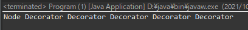
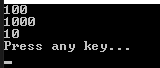

[Design pattern] 2-4. デコレーターパターン(Decorator pattern)
こんにちは。明月です。
この投稿はデザインパターンのデコレーターパターン(Decorator pattern)に関する説明です。
デコレーターという英語の意味では飾るという意味です。その意味でデコレーターパターンはインターフェースから継承したクラスの機能を拡張するためのパターンだと言えます。

Reference - https://en.wikipedia.org/wiki/Decorator_pattern
#pragma once
#define _CRT_SECURE_NO_WARNINGS
#include <stdio.h>
#include <iostream>
#include <ctime>
using namespace std;
// INodeインターフェース
class INode {
public:
// 関数抽象化
virtual void print() = 0;
virtual ~INode() { }
};
// INodeインターフェースを継承したクラス
class Node : public INode {
public:
// 関数再定義
virtual void print() {
// コンソールに出力
cout << "Node print()" << endl;
}
};
// INodeに関するデコレーターの抽象クラス、INodeを継承
class NodeDecorator : public INode {
private:
// デコレーターメンバー変数
INode* node;
protected:
// デコレーターメンバー変数取得関数
INode* getNode() {
// メンバー変数リターン
return this->node;
}
public:
// コンストラクタ
NodeDecorator(INode* node) {
// メンバー変数設定
this->node = node;
}
// デストラクタ
~NodeDecorator() {
// メンバー変数をメモリから解除
delete this->node;
}
};
// NodeDecoratorデコレーター抽象クラスを継承、時間を追加
class NodeTimeDecorator : public NodeDecorator {
public:
// コンストラクタ設定
NodeTimeDecorator(INode* node) : NodeDecorator(node) {
}
// 基本的にINodeインターフェースを継承するので、print関数を再定義、既存のnode->print結果に時間を追加
void print() {
// 現在時間取得
time_t t = time(nullptr);
// tmクラスに変換
tm* now = localtime(&t);
// 現在時間をコンソールに出力
cout << (now->tm_year + 1900) << '-' << (now->tm_mon + 1) << '-' << now->tm_mday << " ";
// デコレーターメンバー変数のprint関数を出力
NodeDecorator::getNode()->print();
}
};
// NodeDecoratorデコレーター抽象クラスを継承、ログ開始と終了を追加
class NodeLogDecorator : public NodeDecorator {
public:
// コンストラクタ設定
NodeLogDecorator(INode* node) : NodeDecorator(node) {
}
// 基本的にINodeインターフェースを継承するので、print関数を再定義、既存のnode->print結果に前行、後行にlogを追加
void print() {
// コンソールに出力
cout << "*****start log******" << endl;
// デコレーターメンバー変数のprint関数を出力
NodeDecorator::getNode()->print();
// コンソールに出力
cout << "*****end log******" << endl;
}
};
// 実行関数
int main() {
// Nodeインスタンス生成
INode* node = new Node();
// NodeTimeDecoratorを追加して、node変数のインスタンスのアドレス変更
node = new NodeTimeDecorator(node);
// NodeLogDecoratorを追加して、node変数のインスタンスのアドレス変更
node = new NodeLogDecorator(node);
// nodeインスタンスのprint関数を呼び出す。
node->print();
// メモリ解除
delete node;
return 0;
}
上の例をみると始めのNodeクラスからは単純なNode->print()の出力だけあるでしょう。
でも、NodeTimeDecoratorのデコレーターを追加して、NodeLogDecoratorのデコレーターを追加しました。
結果はNodeLogDecoratorのprintが呼び出してNodeTimeDecoratorのprintが呼び出して、最終的にNodeクラスのprintが呼び出されました。
// INode インターフェース
interface INode {
// 抽象関数
String output();
}
// INodeインターフェースを継承したNodeクラス
class Node implements INode {
// 関数再定義
public String output() {
// 値リターン
return "Node";
}
}
// INodeインターフェースを継承したデコレーター抽象クラス
abstract class ANodeDecorator implements INode {
// メンバー変数
private INode node;
// コンストラクタ
public ANodeDecorator(INode node) {
// メンバー変数設定
this.node = node;
}
// メンバー変数リターン
protected INode getNode() {
// リターン
return this.node;
}
}
// ANodeDecoratorデコレーター抽象クラスを継承
class CheckANodeDecorator extends ANodeDecorator implements INode {
// コンストラクタからINodeのインスタンス設定
public CheckANodeDecorator(INode node) {
super(node);
}
// 関数再定義
public String output() {
// 値リターン - 文字列の後でDecoratorという文字列を追加する。
return super.getNode().output() + " Decorator";
}
}
public class Program {
// 実行関数
public static void main(String[] args) {
// Nodeインスタンス生成
INode node = new Node();
// 繰り返しを利用してCheckANodeDecoratorを五回に生成
for (int i = 0; i < 5; i++) {
// CheckANodeDecoratorインスタンス生成、INodeインスタンス入力
node = new CheckANodeDecorator(node);
}
// コンソールに出力
System.out.println(node.output());
}
}

デコレーター構造は抽象クラスからインターフェースを継承してコンストラクタには継承したインターフェースを継承したインスタンスを受け取ります。
そしてデコレーター抽象クラスを継承したクラスにはインターフェースの定義により作成してメンバー変数にある継承したインターフェースのインスタンスを実行します。
そうならデコレータークラスはINodeを継承したすべてのインスタンスの抽象化された関数にデータを追加することができます。
using System;
// INode インターフェース
interface INode
{
// 抽象関数
int output();
}
// INodeインターフェースを継承したNodeクラス
class Node : INode
{
// メンバー変数
private int data;
// コンストラクタ
public Node(int data)
{
// メンバー変数設定
this.data = data;
}
// 関数再定義
public int output()
{
// 値リターン
return this.data;
}
// ToString再定義
public override String ToString()
{
// outputの値を出力
return this.output().ToString();
}
}
// INodeインターフェースを継承したデコレーター抽象クラス
abstract class ANodeDecorator : INode
{
// メンバー変数
private INode node;
// コンストラクタ
public ANodeDecorator(INode node)
{
// メンバー変数設定
this.node = node;
}
// メンバー変数リターン
protected INode getNode()
{
// リターン
return this.node;
}
// ToString再定義
public override String ToString()
{
// outputの値を出力
return this.output().ToString();
}
// インターフェースのoutput関数抽象化
public abstract int output();
}
// ANodeDecoratorデコレーター抽象クラスを継承
class MultiplyDecorator : ANodeDecorator, INode
{
// コンストラクタからINodeのインスタンス設定
public MultiplyDecorator(INode node) : base(node) { }
// 関数再定義
public override int output()
{
// 値リターン - 10の値を掛ける
return base.getNode().output() * 10;
}
}
// ANodeDecoratorデコレーター抽象クラスを継承
class DivisionDecorator : ANodeDecorator, INode
{
// コンストラクタからINodeのインスタンス設定
public DivisionDecorator(INode node) : base(node) { }
// 関数再定義
public override int output()
{
// 値リターン - 10の値を割る。
return base.getNode().output() / 10;
}
}
class Program
{
// 列挙型
enum CalType
{
Multiply,
Division
}
// ファクトリーメソッドパターン
static INode GetNodeFactory(int data, CalType? calType = null)
{
// Nodeインスタンス生成
INode node = new Node(data);
// パラメータからCalType.Multiplyを受け取ったら
if (calType == CalType.Multiply)
{
// MultiplyDecoratorデコレーターでインスタンスを生成
node = new MultiplyDecorator(node);
}
// パラメータからCalType.Divisionを受け取ったら
else if (calType == CalType.Division)
{
// MultiplyDecoratorデコレーターでインスタンスを生成
node = new DivisionDecorator(node);
}
// インスタンスリターン
return node;
}
// 実行関数
static void Main(string[] args)
{
// 列挙型パラメータがなく、ファクトリーメソッド関数を呼び出し、INodeの値を取得、ToStringでコンソールに出力
Console.WriteLine(GetNodeFactory(100));
// 列挙型パラメータがCalType.Multiplyでファクトリーメソッド関数を呼び出し、INodeの値を取得、ToStringでコンソールに出力(MultiplyDecoratorデコレーターインスタンス)
Console.WriteLine(GetNodeFactory(100, CalType.Multiply));
// 列挙型パラメータがCalType.Divisionでファクトリーメソッド関数を呼び出し、INodeの値を取得、ToStringでコンソールに出力(DivisionDecoratorデコレーターインスタンス)
Console.WriteLine(GetNodeFactory(100, CalType.Division));
// 任意のキーを押してください
Console.WriteLine("Press any key...");
Console.ReadKey();
}
}

上の例はデコレーターパターンでファクトリーメソッドパターンを追加したことです。
GetNodeFactory関数でCalTypeタイプのパラメータの結果により取得するインスタンス種類が違いますね。
個人的に構造パターンの中でファサードパターン(Facade pattern)の以外によく使うパターンではないかと思います。例えば、フレームワークや.Net Frameworkで提供する基本クラスを仕様により変更することが多いですが、その場合、デコレーターパターンを適用するとすごくコーディングが楽になることを感じますね。
特にログ処理クラスやデータベースのデータ処理クラスでよく使います。
ここまでデザインパターンのデコレーターパターン(Decorator pattern)に関する説明でした。
ご不明なところや間違いところがあればコメントしてください。
- [Design pattern] 2-7. ファサードパターン(Facade pattern)2021/11/02 19:32:31
- [Design pattern] 2-6. プロキシパターン(Proxy pattern)2021/11/01 19:42:44
- [Design pattern] 2-5. フライウェイトパターン(Flyweight pattern)2021/10/29 19:48:27
- [Design pattern] 2-4. デコレーターパターン(Decorator pattern)2021/10/28 20:11:13
- [Design pattern] 2-3. ブリッジパターン(Bridge pattern)2021/10/27 20:32:21
- [Design pattern] 2-2. コンポジットパターン(Composite pattern)2021/10/27 20:30:54
- [Design pattern] 2-1. アダプターパターン(Adapter pattern)2021/10/26 19:12:40
- [Design pattern] 1-5. プロトタイプパターン(Prototype pattern)2021/10/22 19:35:45
- [Design pattern] 1-4. デザインパターンの抽象ファクトリーパターン(Abstract factory pattern)2021/10/15 19:31:03
- [Design pattern] 1-3. ファクトリーメソッドパターン(Factory method pattern)2021/06/23 19:45:37
- [Design pattern] 1-2. ビルダーパターン(Builder pattern)2021/06/11 19:06:28
- [C#] 60. ウィンドウフォーム(Window form)のイベント設定する方法2021/11/02 21:18:08
- [Design pattern] 2-7. ファサードパターン(Facade pattern)2021/11/02 19:32:31
- [Design pattern] 2-6. プロキシパターン(Proxy pattern)2021/11/01 19:42:44
- [Design pattern] 2-5. フライウェイトパターン(Flyweight pattern)2021/10/29 19:48:27
- [C#] 59. ウィンドウフォーム(Window form)にコントロール(Control)を使い方法2021/10/29 19:45:43
- [Design pattern] 2-4. デコレーターパターン(Decorator pattern)2021/10/28 20:11:13
- [C#] 58. ウィンドウフォーム(Window form)を作成する方法、そしてウィンドウメッセージとキュー2021/10/27 20:35:44
- [Design pattern] 2-3. ブリッジパターン(Bridge pattern)2021/10/27 20:32:21
- [Design pattern] 2-2. コンポジットパターン(Composite pattern)2021/10/27 20:30:54
- [Design pattern] 2-1. アダプターパターン(Adapter pattern)2021/10/26 19:12:40
- [Project design] プログラム最終テスト - ST(System test(Standard, Scenario))2021/10/26 19:10:07
- [Project design] プログラム結合テスト - IT(Integration test)2021/10/25 20:12:17
- [Python] Seleniumライブラリを使う方法(自動ウェブテスト、ウェブスクレイピング)2021/10/25 19:29:00
- [Design pattern] 1-5. プロトタイプパターン(Prototype pattern)2021/10/22 19:35:45
- [Project design] プログラム検証とテスト - Unitテスト2021/10/22 19:34:09